Годрик Сторукий
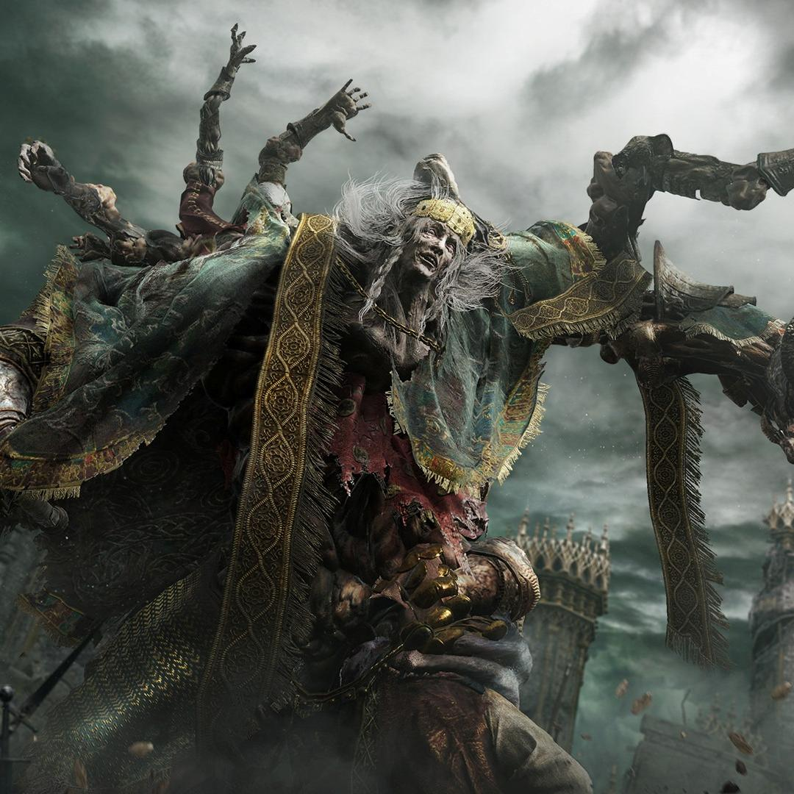
Здоровье: 6.080
Руны: 20.000
Годрик Сторукий (англ. Godrick The Grafted) — босс в игре Elden Ring. Является одним из шести Полубогов и последним представителем золотого рода.
Радан Бич Звёзд
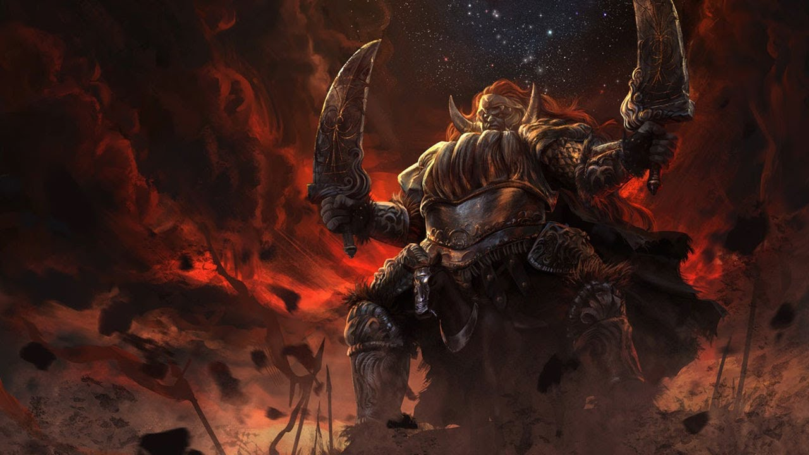
Здоровье: 9.572
Руны: 70.000
Радан Бич Звёзд (англ. Starscourge Radahn) — босс в игре Elden Ring. Является одним из шести Полубогов.
Королева Реннала Полнолунная
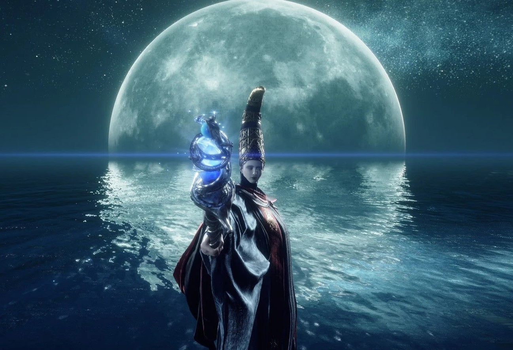
Здоровье: 7.590 (2 фазы)
Руны: 40.000
Королева Реннала Полнолунная (англ. Rennala, Queen of the Full Moon) — босс в игре Elden Ring. Заведующая Академией Райи Лукарии и владелица одной из великих рун.
Рикард, богохульный владыка
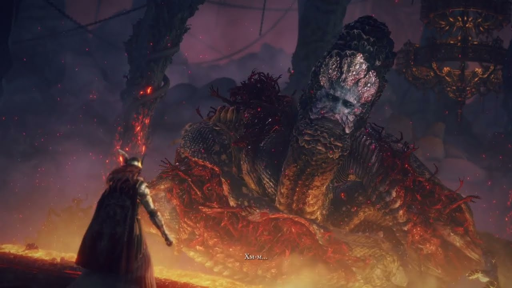
Здоровье: 89.613
Руны: 130.000
Рикард, богохульный владыка (англ. Rykard, Lord of Blasphemy) — опциональный босс в игре Elden Ring.
Морготт, король знамений
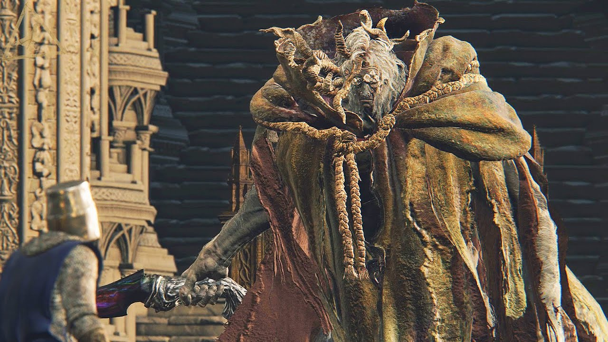
Здоровье: 10.399
Руны: 120.000
Морготт, король знамений (англ. Morgott, The Omen King) — обязательный босс в игре Elden Ring.
Огненный великан
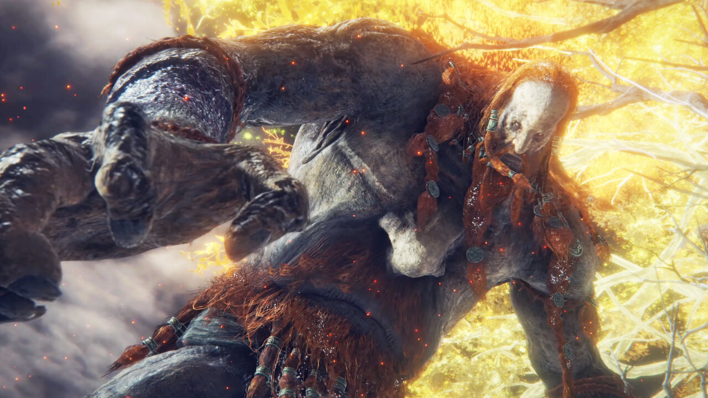
Здоровье: 43.263
Руны: 180.000
Огненный великан (англ. Fire Giant) — обязательный босс в игре Elden Ring.
Мог Повелитель Крови
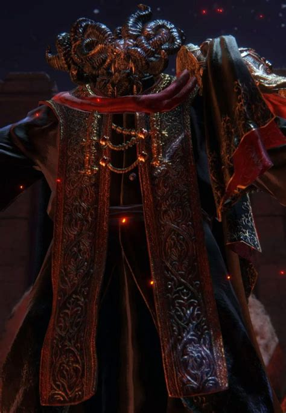
Здоровье: 18.389
Руны: 420.000
Мог Повелитель Крови (англ. Mohg Lord of Blood) — опциональный босс в игре Elden Ring. Является одним из шести Полубогов.
Владыка драконов Пласидусакс
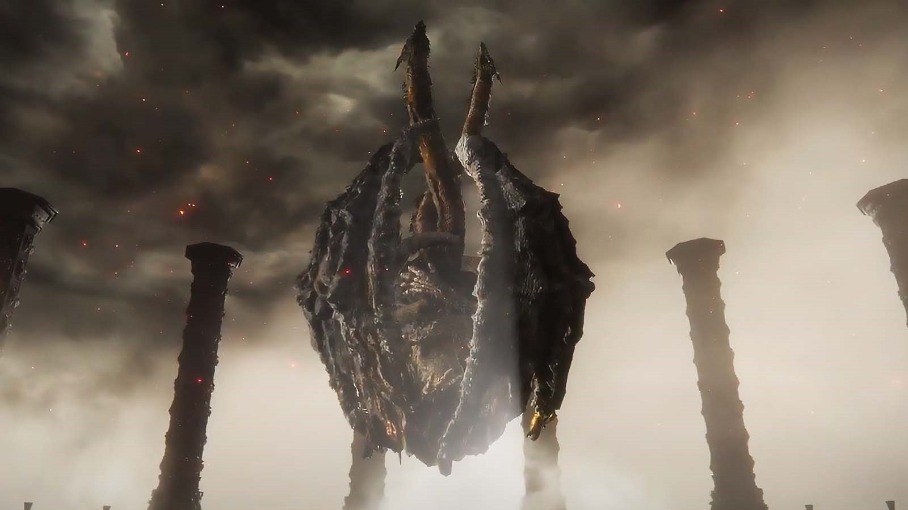
Здоровье: 26.651
Руны: 280.000
Владыка драконов Пласидусакс (англ. Dragonlord Placidusax) — опциональный босс в игре Elden Ring.
Маликет Чёрный Клинок
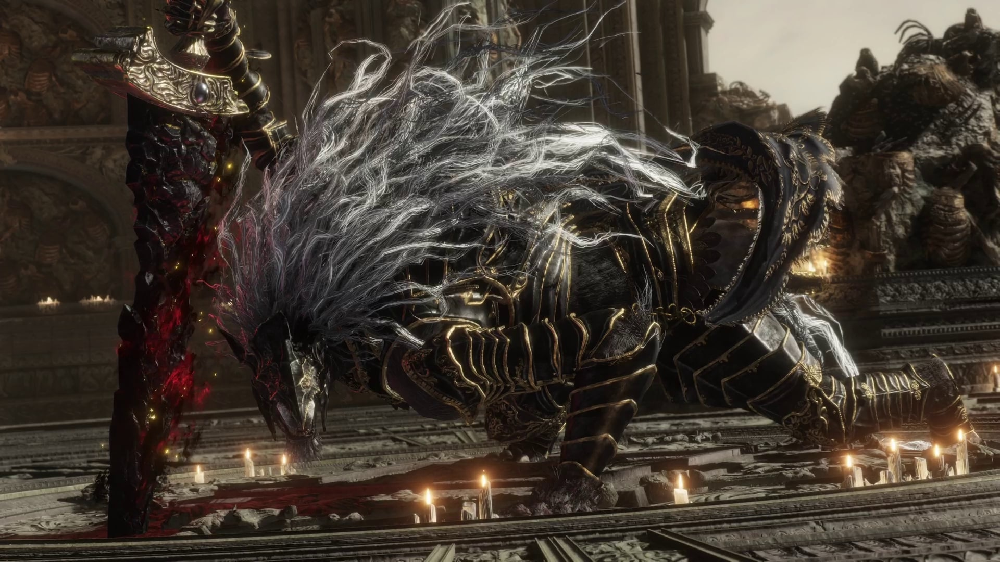
Здоровье: 10.620
Руны: 220.000
Маликет Чёрный Клинок (англ. Maliketh, The Black Blade) — обязательный босс в игре Elden Ring.
Маления, Клинок Микеллы
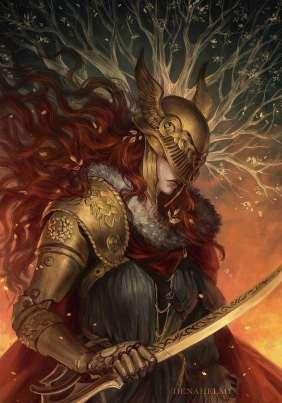
Здоровье: 33.529
Руны: 480.000
Маления, Клинок Микеллы (англ. Malenia, Blade of Miquella) — дочь королевы Марики и Радагона, Неземная, полубог и опциональный босс в игре Elden Ring.
Годфри, первый повелитель Элдена/Хоара Лукс
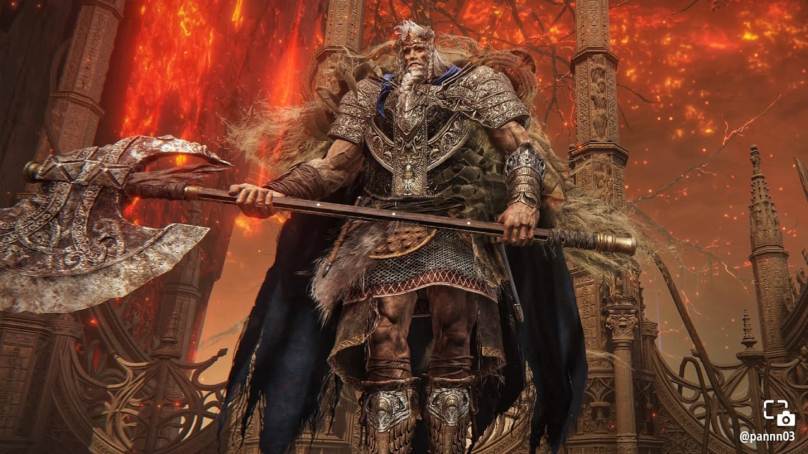
Здоровье: 21.903
Руны: 300.000
Годфри, первый повелитель Элдена/Хоара Лукс (англ. Godfrey, First Elden Lord/Hoarah Loux) — обязательный босс в игре Elden Ring.
Зверь Элдена
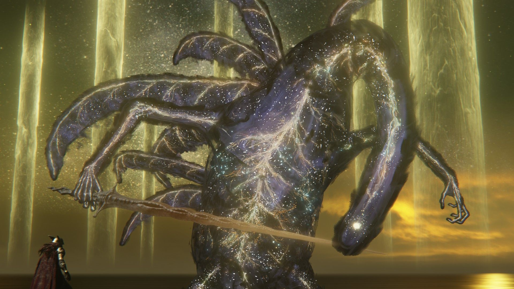
Здоровье: 22.127
Руны: 500.000
Зверь Элдена (англ. Elden Beast) — обязательный босс в игре Elden Ring.